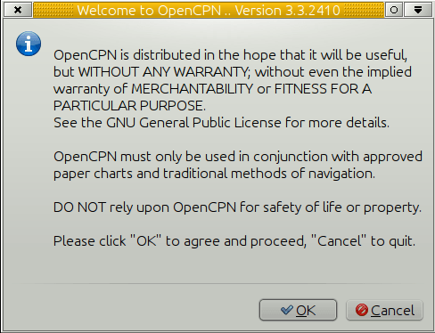
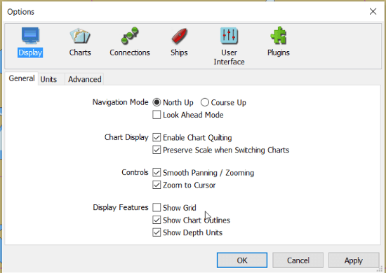
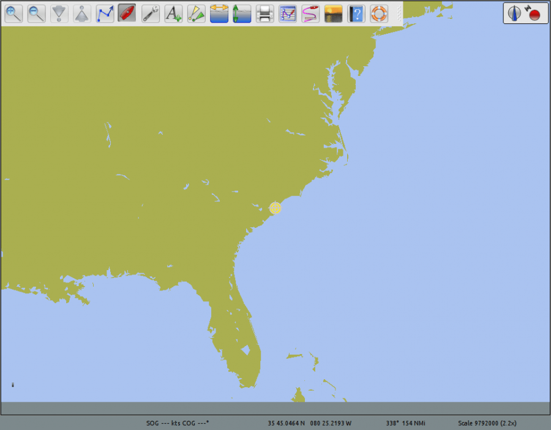

Here is what happens once OpenCPN is installed and you start the program for the first time.
First this message greets you. Please remember what you agree to when clicking OK.

Next OpenCPN prompts you to install charts.

And sends you to “Options” to do so. Click on the Charts tab, to install charts. Read all about installing charts in Chart Installation
If you're not quite ready to install yet just click “OK” in the Options dialog.

The worldwide background Map will greet you.
From here explore the different features in OpenCPN by clicking around, or read on…
=====